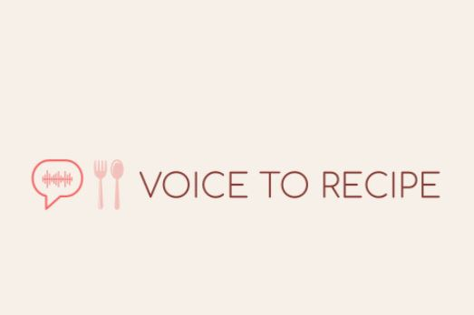

Find recipes from your favorite meals!
Use your voice or type the name of your favorite recipe in the white box.
Search
Modal title
×
Add here the ingredients
Previous Searches:

Modal title
×
Add here the ingredients